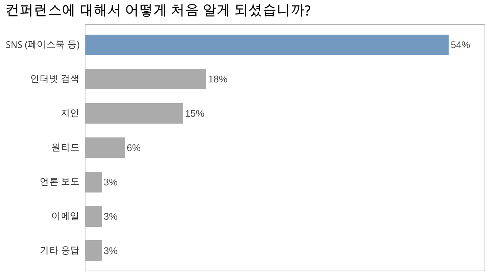
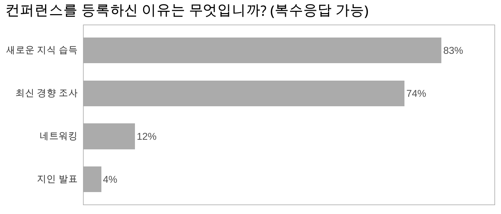
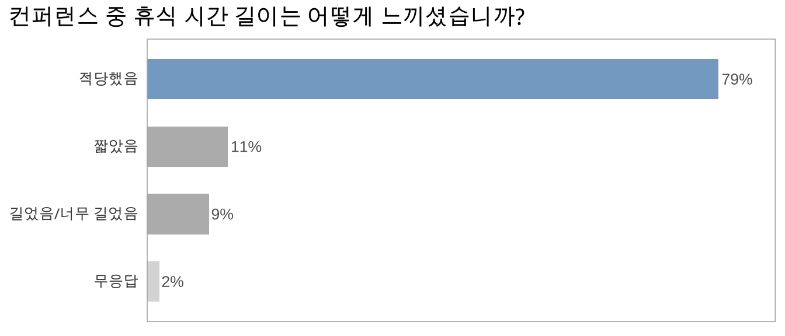
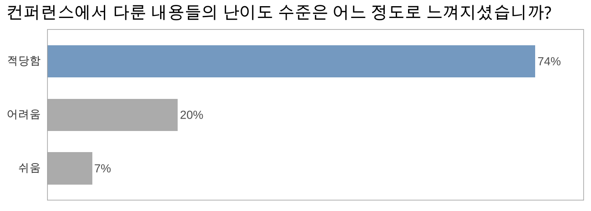

Section 2 컨퍼런스 참석 및 만족도
컨퍼런스의 참석 경로, 참석 동기 및 만족도에 대한 설문입니다.
2.1 컨퍼런스에 대해서 어떻게 처음 알게 되셨습니까?
응답자의 절반 이상이 페이스북 등 소셜미디어를 통해 컨퍼런스에 대해 처음 알게 되었다고 응답하였습니다. 다음 컨퍼런스에서 트위터 등 보다 다양한 소셜미디어를 통한 홍보를 고려해 볼 만함을 시사하는 결과입니다.
아래 열거된 항목 외 기타 응답으로는 학회나 수업을 통해 알게 되었다는 응답이 있었습니다.

2.2 컨퍼런스를 등록하신 이유는 무엇입니까? (복수응답 가능)
다수의 응답자가 새로운 지식 습득이나 최신 경향 조사를 위해 컨퍼런스에 참석한 반면, 소수의 응답자만이 네트워킹을 위해 참석하였다고 응답하였습니다. 다만, 아래에 나올 “기대에 못 미쳤던 부분”에 대한 서술형 응답이나 “내년 컨퍼런스에 바라는 점”에 대한 서술형 응답을 살펴볼 때, 상호 커뮤니케이션 및 네트워킹에 대한 요구가 다음 컨퍼런스에서 증가할 가능성이 충분해 보입니다.

2.3 컨퍼런스에 대해 전반적으로 얼마나 만족하셨습니까?
응답자 대부분이 전반적으로 만족 혹은 매우 만족하였다고 응답하였으며, 불만족하였다는 응답은 없었습니다.
2.4 컨퍼런스 시간의 전체 길이는 어떻게 느끼셨습니까?
컨퍼런스 시간 길이는 전반적으로 적당하였다는 응답이 대부분이었으며, 그 외 짧았다는 응답이 길었다는 응답보다 약간 많았습니다.
2.5 컨퍼런스 중 휴식 시간 길이는 어떻게 느끼셨습니까?
휴식 시간 길이는 적당했다는 응답이 대부분이었으며, 그 외 짧았다는 응답과 길었다는 응답이 비슷하게 분포하여, 전반적으로 무난한 휴식 시간 설정이었음을 나타냈습니다.

2.6 컨퍼런스에서 다룬 내용들의 난이도 수준은 어느 정도로 느껴지셨습니까?
응답자의 대부분은 난이도 수준이 적당하였다고 응답하였으나, 어려웠다는 응답도 20% 있었습니다. 이후에 R 사용 경력 별 만족도를 추가로 살펴보는 것이 다음 컨퍼런스 기획에 도움이 될 것으로 기대합니다.

2.7 컨퍼런스에서 새롭게 알게 되신 내용들이 향후 업무에 얼마나 도움이 될 것이라 생각하십니까?
대부분의 응답자가 컨퍼런스에서 알게 된 내용들이 향후 업무에 도움이 될 것으로 기대하였습니다. 다만, “어느 정도 도움이 될 것”이라는 응답이 “많은 도움이 될 것”이라는 응답보다 많았습니다. 다음 컨퍼런스에서 “많은 도움이 될 것”이라는 응답의 비율을 높이기 위해서 개선할 여지가 많이 있음을 시사하는 결과였습니다.
2.8 컨퍼런스 플랫폼의 접속 및 사용은 편리하셨습니까?
대부분 컨퍼런스 플랫폼 사용이 편리했다는 응답이었으나, 매우 편리했다는 응답은 1/4 정도에 그쳤습니다.
2.9 발표 영상의 화질 및 소리 품질은 만족스러우셨습니까?
다수의 응답이 “만족” 혹은 “매우 만족”이었으나, “매우 만족”과 “보통”이 각각 1/4 내외로, 다음 컨퍼런스에서 개선될 필요가 있음을 보였습니다.
2.10 이번 컨퍼런스에서 기대 이상으로 좋았던 부분들을 자유롭게 말씀해주세요.
다양한 주제, 실무 경험의 공유, 새로운 정보 습득 등을 포함하여, 다양한 긍정적인 피드백을 얻었습니다.
2.11 이번 컨퍼런스에서 기대에 못 미쳤던 부분들을 자유롭게 말씀해주세요.
양방향 커뮤니케이션의 부족이나 컨퍼런스 플랫폼의 기술적인 부분 등 온라인 컨퍼런스에서 일반적으로 겪는 어려움을 중심으로 여러가지 피드백이 있었습니다.